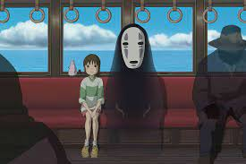

{kind=link}

A viagem de Chihiro é uma das mais notáveis animações dos estúdios Ghibli.
Lançado em 2001, está disponível na plataforma Netflix, plataforma que dispõe
de uma vasta coleção de filmes do estúdio.

O Studio Ghibli é um estúdio de animação japonês. Suas animações são aclamadas
pela crítica, dentre as mais populares estão: Meu Vizinho Totoro, A Viagem de
Chihiro, O Castelo Animado, Serviço de Entregas da Kiki dentre outros. A Fundação
do estúdio foi em 18 de julho de 1985, em Tóqui, no Japão. O título mais recente
lançada pelo estúdio foi "Aya e a Bruxa", lançado em 2020.
Chihiro é uma criança que está se mudando com seus pais para uma nova cidade.
ao chegar na cidade, ela está vazia mas incrivelmente ainda haviam luzes, fumaça
saindo das chaminés como se tudo estivesse funcionando normalmente. Então os pais
de Chihiro acham um restaurante com comida disposta em um balcão e começam a comer
enquanto a jovem explora a cidade. O que ela não esperava, era que quando a noite
caí, a cidade se infesta de fantasmas!
.jpg)